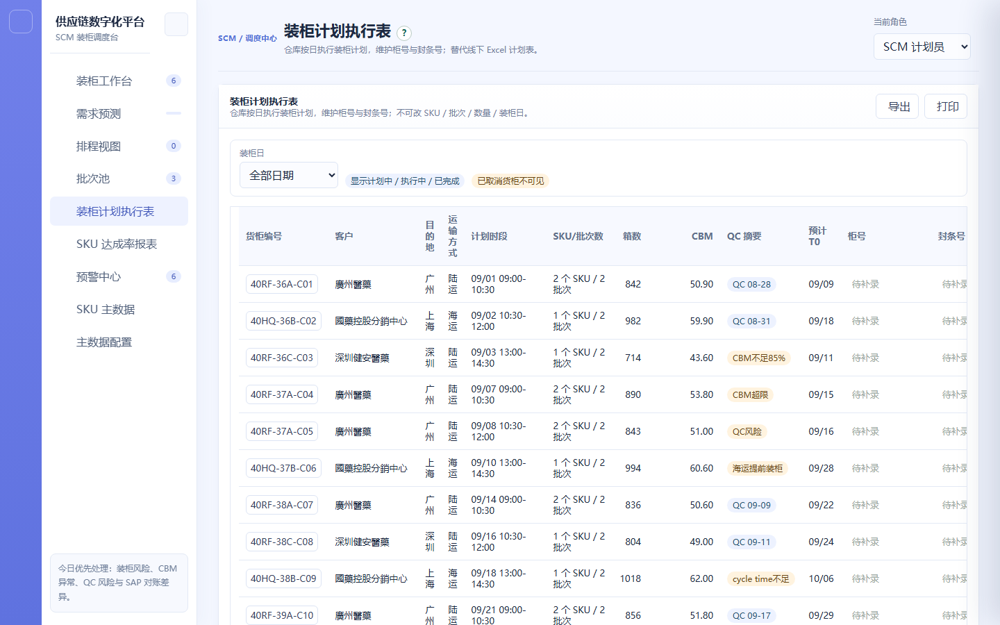
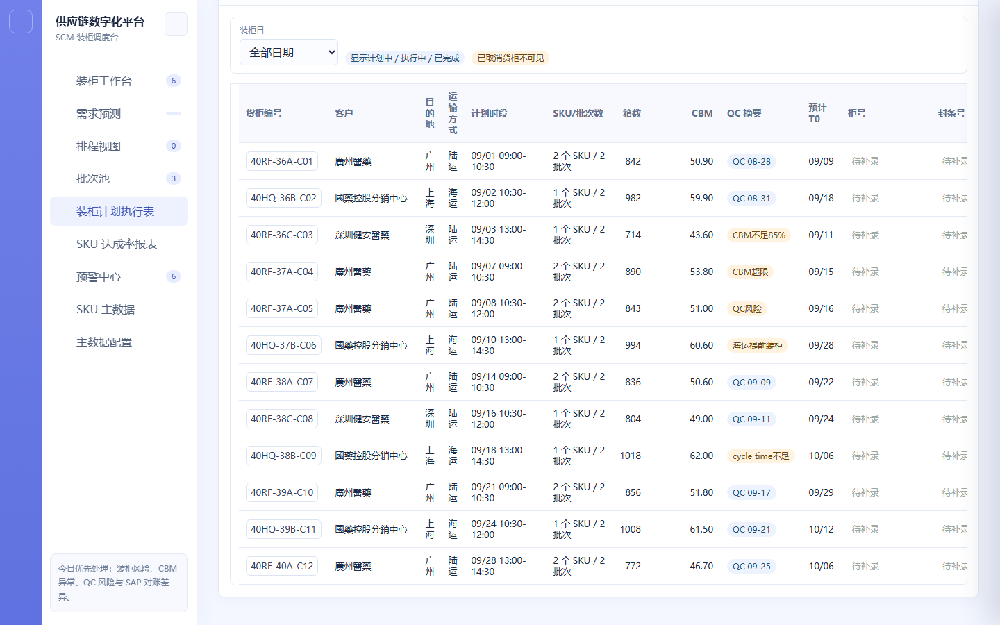

| 项目名称 | 供应链协同平台 | 模块 | 装柜计划执行表 |
|---|---|---|---|
| 需求名称 | 装柜计划执行表（仓库按日执行） | 负责人 | SCM 产品线 |
| 文档版本 | V1.0 | 状态 | 已确认 |
| 更新日期 | 2026-09-11 | 关联原型 | supply-chain-prototype.html（装柜计划执行表页） |
| 版本 | 日期 | 变更说明 | 作者 |
|---|---|---|---|
| V1.0 | 2026-09-11 | 初版：装柜日筛选、14 列执行表、柜号与封条号补录权限、计划有更新的时效展示、SAP 对账差异、导出与打印、已取消货柜不可见 | SCM 产品线 |
装柜计划执行表是仓库按日执行装柜计划的在线表单，用于替代线下 Excel 计划表。此前仓库拿到的是一份静态 Excel，计划发生调整后无法感知，且实际柜号、封条号靠线下记录后回传，形成信息断层。
本模块的定位是执行层：仓库只需看清「今天装哪些柜、装什么、装多少」，并把实际执行信息（柜号、封条号）就地补录。计划数据本身由 SCM 在排程视图维护，执行表只读展示，不提供计划编辑能力。与排程视图的边界是：排程视图负责「计划怎么定」，执行表负责「今天怎么执行」。
装柜计划执行表的端到端流程见下方流程图（独立文件），关键分支为「装柜日筛选」「已取消货柜过滤」「字段可编辑性判定（柜号 / 封条号）」「执行后 SAP 对账」。
下图为现有系统「装柜计划执行表」页面的真实运行截图。顶部为装柜日筛选与可见状态说明标签：

执行表 14 列（含柜号、封条号的可补录输入框，未补录时以「待补录」占位）：

| 一级模块 | 二级功能 | 原型 | 描述 |
|---|---|---|---|
| 装柜计划执行表 | 装柜日筛选与可见状态 |
【页面元素】顶部装柜日筛选（日期选择器，默认今日）；右侧两个状态说明标签：「显示计划中 / 执行中 / 已完成」与「已取消货柜不可见」。 【交互说明】切换装柜日 → 表格按该日刷新；标签为常驻说明，不作交互。 【功能逻辑】展示范围 = 所选装柜日下、生命周期状态为计划中 / 执行中 / 已完成的货柜；已取消货柜一律过滤不展示。 【数据与内容规则】装柜日以货柜计划的计划装柜日为准；跨日货柜按计划装柜日归属单日。 |
|
| 执行表（14 列） |
【页面元素】14 列：货柜编号、客户、目的地、运输方式、计划时段、SKU 批次数、箱数、CBM、QC 摘要、预计 T0、柜号、封条号、状态、计划有更新。表头固定，内容区横向滚动。 【交互说明】点击货柜编号 → 进入货柜详情查看完整明细；列宽自适应内容，窄屏下横向滚动不重叠。 【功能逻辑】箱数、CBM、SKU 批次数为装柜明细的实时汇总；QC 摘要展示最晚 QC 节点与风险标记；状态取货柜生命周期状态。 【数据与内容规则】客户列展示简称（去除「股份有限公司 / 有限公司 / 有限责任公司 / 集团公司 / 公司」后缀）；CBM 展示批次合计值。 |
||
| 柜号 / 封条号补录 |
【页面元素】柜号、封条号单元格为就地输入框；未补录时显示「待补录」占位灰字。 【交互说明】点击单元格 → 就地编辑 → 失焦或回车即保存并写入操作日志；无权限角色点击提示「当前角色无权维护该执行字段」。 【功能逻辑】仓库仅维护柜号与封条号；SKU、批次、数量、计划日期一律只读，不提供任何编辑入口。 【前置条件与权限】柜号：SCM / SCM 主管 / 仓库可补录；封条号：仓库为主责，SCM / SCM 主管亦可补录。已取消货柜不展示，故无编辑场景。 |
||
| 计划有更新提示 |
【页面元素】「计划有更新」列展示该货柜计划内容的最近一次更新时间与相对时间（如「2 小时前」）。 【交互说明】24 小时内的更新以高亮样式展示，超过 24 小时后转为灰色；条目永久保留，鼠标悬浮可查看该货柜的全量更新时间列表。 【功能逻辑】每次计划内容变更（日期、批次、上下架、拆批等）刷新该货柜的更新时间；无变更记录的货柜显示「—」。 【文案规范】「计划有更新」为统一列名；悬浮面板标题为「更新时间记录」。 |
||
| SAP 对账差异与 CBM 风险 |
【功能逻辑】执行日之后仍未匹配到 SAP 出库的货柜，在状态列或独立标识位显示 SAP 对账差异预警；CBM 超限仍进入执行的货柜显示实际装柜高优先级对账风险。 【边界说明】上述标识只提示，不阻断执行表的查看与补录；风险的处理在预警中心完成。 【前置条件与权限】对账差异由 SAP 出库回传结果驱动；未回传期间显示等待状态。 |
||
| 导出与打印 |
【页面元素】页面右上角「导出」与「打印」按钮。 【交互说明】点「导出」→ 下载当日执行表 CSV / Excel，文件名格式为「装柜计划执行表-YYYYMMDD.csv」（14 列中文表头，带 BOM 以兼容 Excel 中文）；点「打印」→ 调用浏览器打印，按横向布局输出。 【功能逻辑】导出范围为当前筛选装柜日下的全部可见货柜（已取消货柜不包含）；导出与打印动作均写入操作日志留痕。 【边界说明】执行表可随时在线预览、下载和打印，不依赖「发布快照」等人工确认动作。 |
| 字段 | 仓库 | SCM 计划员 | SCM 主管 | 说明 |
|---|---|---|---|---|
| 货柜编号 / 客户 / 目的地 / 运输方式 / 计划时段 | 只读 | 只读 | 只读 | 计划数据，由排程视图维护 |
| SKU 批次数 / 箱数 / CBM / QC 摘要 / 预计 T0 | 只读 | 只读 | 只读 | 系统汇总计算 |
| 柜号 | 可补录 | 可补录（发运后仍可） | 可补录（发运后仍可） | 实际物流柜号 |
| 封条号 | 可补录（主责） | 可补录 | 可补录 | 仓库实际操作后补录 |
| 状态 / 计划有更新 | 只读 | 只读 | 只读 | 系统计算与日志 |
| 场景 | 处理 |
|---|---|
| 已取消货柜 | 不在执行表中展示；标签常驻说明「已取消货柜不可见」 |
| 当日无货柜 | 表格显示空态占位，提示「当日无装柜计划」 |
| 无权限补录 | 点击单元格提示「当前角色无权维护该执行字段」 |
| 执行日后未匹配 SAP 出库 | 显示 SAP 对账差异预警；不阻断查看与补录 |
| CBM 超限进入执行 | 显示实际装柜高优先级对账风险 |
| 窄屏浏览 | 表头固定、内容区横向滚动，列之间不重叠 |
| 导出时 Excel 组件未加载 | 降级生成带 BOM 的 CSV 备用文件 |
| 事件名 | 触发时机 | 关键属性 |
|---|---|---|
| exec_date_change | 切换装柜日 | 日期、货柜数 |
| exec_row_open | 点击货柜编号查看详情 | 货柜编号、状态 |
| exec_field_edit | 补录柜号 / 封条号 | 货柜编号、字段名、角色 |
| exec_field_blocked | 无权限编辑被拦截 | 货柜编号、字段名、角色 |
| exec_update_hover | 悬浮查看计划更新时间全量 | 货柜编号、记录条数 |
| exec_export | 导出执行表 | 日期、货柜数、格式（CSV/Excel） |
| exec_print | 打印执行表 | 日期、货柜数 |
| 阶段 | 内容 | 时间 |
|---|---|---|
| 一期 | 装柜日筛选、14 列执行表、柜号与封条号补录、计划有更新时效、SAP 对账差异、导出与打印、已取消货柜过滤 | 待确认 |
| 二期 | 批量补录、执行进度看板、按客户的执行清单打印模板 | 待确认 |
| 术语 | 说明 |
|---|---|
| 执行表 | 仓库按日执行装柜计划的在线表单，替代线下 Excel 计划表 |
| 计划有更新 | 货柜计划内容最近一次变更时间的提示标识；24 小时内高亮，之后转灰，永久保留 |
| SAP 对账差异 | 执行日后仍未匹配到 SAP 出库的货柜所触发的差异预警 |
| 柜号 | 实际物流柜号，可由 SCM / 仓库补录，发运后仍可 |
| 封条号 | 仓库实际操作后补录或修正的封条编号，仓库为主责 |
| 生命周期状态 | 计划中 → 执行中 → 已完成 / 已取消；已取消货柜不在执行表展示 |